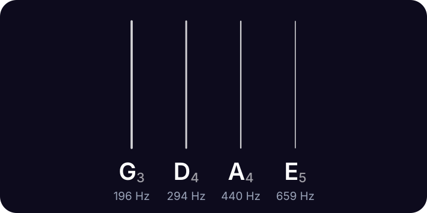

lodestone
lodestone
Violin tuner
A violin is tuned G D A E, from the lowest string to the highest, each string a fifth above the last: G3, D4, A4 (440 Hz) and E5.
Lodestone for iPhone shows these strings too, with the one you're tuning lit up. 99¢, once.
Violin notes and frequencies

| String | Note | Frequency |
|---|---|---|
| 4th | G3 | 196.00 Hz |
| 3rd | D4 | 293.66 Hz |
| 2nd | A4 | 440.00 Hz |
| 1st | E5 | 659.26 Hz |
Frequencies use A4 = 440 Hz. Strings are numbered from the thinnest.
Most violinists tune the A string first, to 440 Hz, then tune the D, G and E to it. Use the pegs for big changes and the fine tuners for the last few cents.
Tuning a violin
- Tune the A string to 440 Hz with the mic, or match the A tone above.
- Tune the D, then the G, then the E. Each open string is a perfect fifth from its neighbor.
- Make big changes with the pegs and small ones with the fine tuners, then check the A again.
Questions
What are the violin string notes?
G, D, A and E, from lowest to highest: G3 (196 Hz), D4 (293.66 Hz), A4 (440 Hz) and E5 (659.26 Hz).
Which violin string should I tune first?
The A string, to 440 Hz. It's the reference the other strings are tuned from.
More tunings
- Standard E A D G B E
- Drop D D A D G B E
- Half step down E♭ A♭ D♭ G♭ B♭ E♭
- D standard D G C F A D
- Drop C C G C F A D
- DADGAD D A D G A D
- Open G D G D G B D
- Open D D A D F♯ A D
- Bass tuner E A D G
- Ukulele tuner G C E A
Lodestone for iPhone
Open Lodestone and play. It's already listening. Pick your instrument to see its strings, with the one you're tuning lit up. 99¢, once. No ads, no accounts, no subscription.